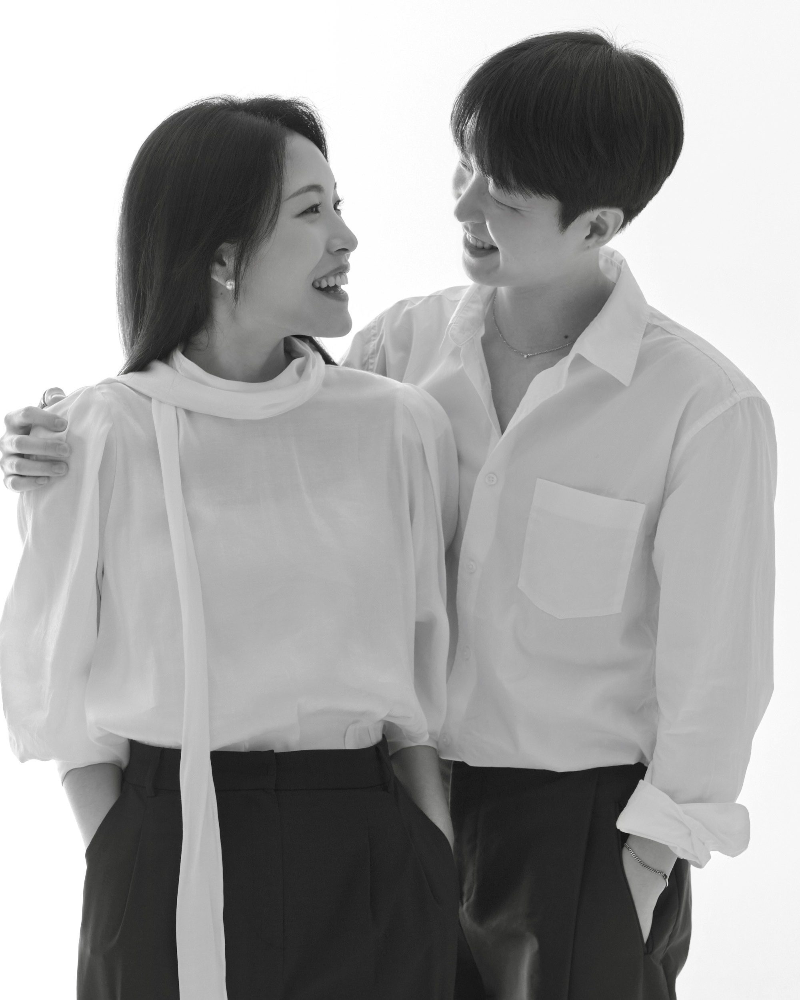
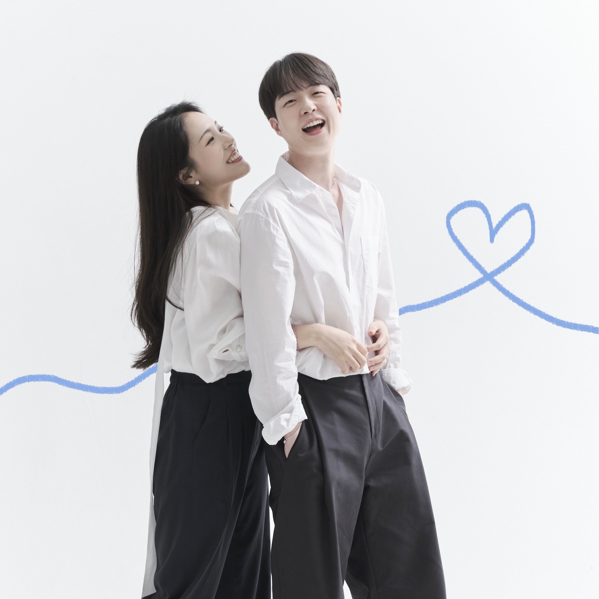

Will you marry me?
Will you be my forever?

래플 당첨된 거 맞아, 주최자가 나거든
래플로 어쩜 딱 자기가 예쁘다 이야기했던 게 있냐면, 이건 오직 강예준만을 위한 래플이거든! 주최자도 나, 개발자도 나, made by 조민주.
나는 우리의 일상을 우리가 좋아하는 것들로 가득 채우고 싶은 맘이라 자기가 예뻐한 걸 요렇게 전해봐. 근데 자기가 카프스킨을 좋아할지 램스킨을 좋아할지 모른 채로 사서 내 눈에 예뻐 보였던 램스킨을 샀는데 자기 맘에 들려나, 떨려! (이게 긴장해서 나는 땀인지 더워서 나는 땀인진 모르겠지만 지금 자기가 이걸 보는 순간 내 땀이 엄청 날 건 벌써 예견돼서 알겠다..! ㅎ)
Surprise!
우리 뻔한 거 좀 싫어하잖아. 이건 그래서 준비한 서프라이즈!
아주 예전에 내가 말한 거 기억날지 모르겠는데, 나는 내가 먼저 프로포즈하는 이 시대의 신여성(?)이 되고 싶은 요상한 로망을 갖고 있던 사람이라 우리가 결혼 이야기를 시작하던 지난겨울 어느 날부터 혼자 부스럭거리면서 이것저것 준비해 봤어. 내가 할 줄 아는 게 컴퓨터뿐이라서 프로포즈도 이렇게 하게 됐는데, 자기가 어떤 반응일지 모르겠네! 좋아해 주면 좋겠다.
나 자기 덕분에 만들고 싶은 게 많아졌다고 이야기한 거 진심이었거든. 그래서 그 수많은 리스트 중 가장 먼저 보여주고 싶었던 걸 오늘 이렇게 개시해. 늘 군말 없이 날 응원하고 믿어준 자기에게 나 이런 거 한다고 알려주고 싶은 마음도 있었고, 앞으로도 이렇게 하나씩 우리가 꿈꿔온 것들 다 이뤄나가며 살자고 이야기하고 싶어서 말이야.
{kind=link}
{kind=link}
{kind=link}
사랑해
사실 이 프로포즈의 첫 운을 어떻게 뗄지 몇 날 며칠을 고민했는데 아무리 예쁜 미사여구를 찾아봐도 온 마음을 담기엔 모자라더라.
나도 프로포즈는 처음이라 엄청 서툴겠지만 진심을 담아 말하자면, 이렇게 사랑하고 사랑받게 해 줘서 고마워.
흰색 트렌치코트를 입었던 처음 그날은 그저 옷만 닮은 사람들이었다가 아이들의 성화에 서로를 알게 됐던 그땐 우리가 이렇게 사랑하게 될 줄 몰랐는데, 처음 그 작은 우연들이 켜켜이 쌓여 지금이 됐네.
자기를 장난스레 뉴런 반쪼가리라 부르던 순간이 엊그제 같은데 이젠 평생의 반쪽이 되어 달라 말하다니. 앞으로 우리가 살아갈 날들도 예측할 수 없는 것들 투성이겠지. 그치만 예쁜 거, 좋은 거, 맛있는 거, 재밌는 걸 함께 나누는 순간들이 우리의 기쁨이 되고, 때때로 마주할 날카롭고 힘든 시간들은 우리의 밑거름이 되길 바라.

행복 뭐 별 거 있나
같이 와웅 한번 외치는 것만으로도 웃기고 좋은데. 그러니 그저 와웅 포인트가 많은 삶을 살아가자. 시시한 장난이라도 피식 새어나오는 웃음이 좋으니 매일을 그렇게 한 번씩 웃음 짓고 살아가자, 우리.
마지막으로 약속하자면, 나중에 되돌아 본 우리의 삶이 참 좋았다. 이야기할 수 있도록 최선을 다하며 사랑할게. 사랑해 강예준!

Will you marry me?
© Tiffany Cho. All rights reserved. Design: HTML5 UP